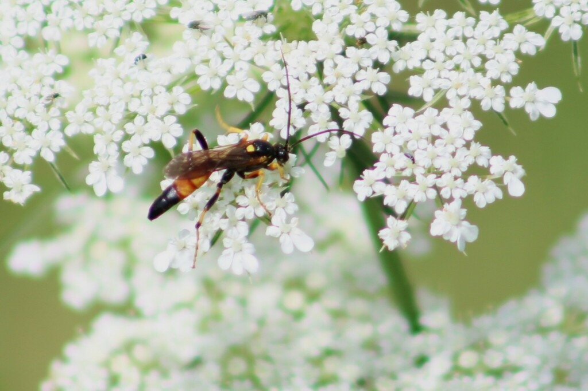
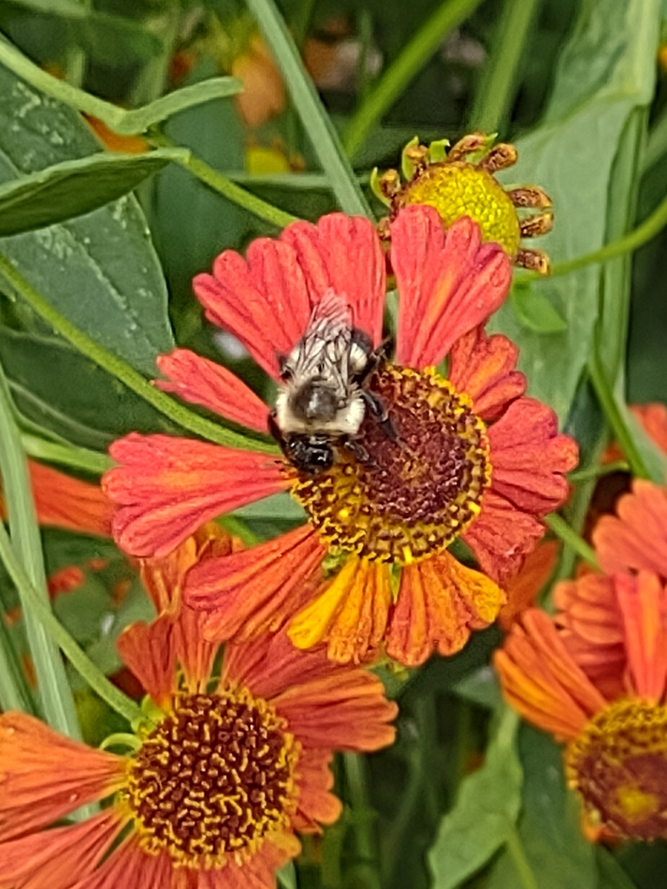

iNaturalist images with plants and pollinators

An Ichneumon wasp (Ichneumon annulatorius) visiting a wild carrot (Daucus carota).

A common Eastern bumble bee Bombus impatiens visiting an unlabeled flowering plant.